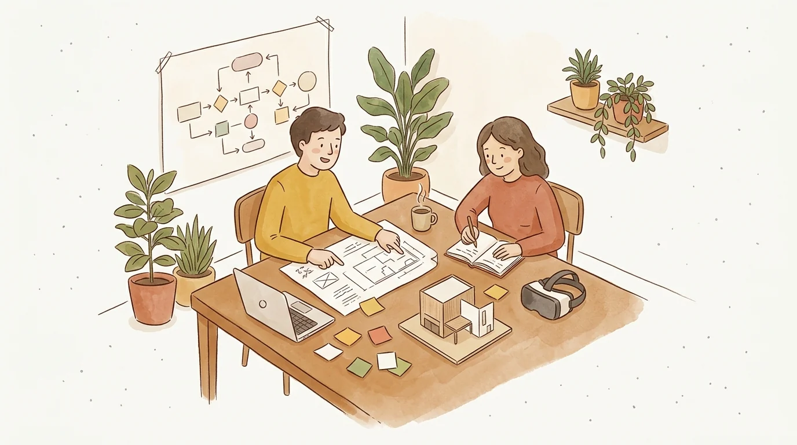

Consultoría sobre innovación
Hagamos lo imposible
Si tu proyecto conlleva uso de tecnología IA, RV/RM/RA, Blockchain, domótica, IoT, entonces hablemos. Nuestra experiencia va desde lo restaurantero, pasando por lo legal, educativo, arquitectónico y constructivo, diseño industrial, asistencia social, salud, y seguridad. Sin importar la industria, te ayudamos a innovar.
Agenda una consulta